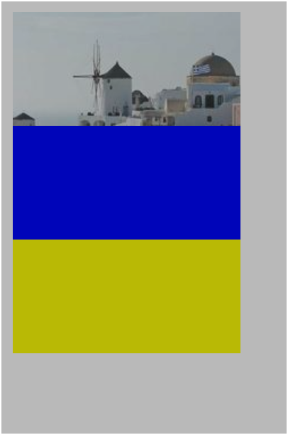

CSS 色彩空間：色相/色度/明度與 Oklab、Oklch
本篇重點 a–n，共 14 個。
重點整理
(a) 色彩學三要素：色相 Hue（顏色的種類，如紅橙黃綠藍紫）、色度/彩度 Chroma/Saturation（顏色的鮮豔純淨度）、明度 Value/Lightness（顏色的明暗深淺）——三者合稱才是完整的「色彩」，"色彩＝種類"這種說法並不精確，正確用詞是"色相＝種類"。
(b) 常見混淆陷阱：把正紅色加白 → 變粉紅色，明度變高但色度反而降低（因為被白光稀釋、不再是純色）；加灰 → 磚紅色，明度變化不大但色度大幅降低。
(c) Tints／Shades／Tones 是傳統調色理論的三種稀釋方向：Tints=純色+白（中心變白，做亮色主題/柔和背景）、Shades=純色+黑（中心變黑，做暗色主題/沉穩文字）、Tones=純色+灰（中心變灰，做高級感/日系文青/不傷眼介面）。日常看到的「標準色相環」只展示最外圈純色，這三種是把立體色彩空間切成三張平面圖來看。

(d) Oklab 是「感知均勻（Perceptually Uniform）」色彩空間，2020 年由色彩科學家 Björn Ottosson 發表，之後被 W3C 納入 CSS Color Module Level 4/5 官方規範。感知均勻代表：明度數值變化 10%，人眼在紅、綠、藍上感受到的亮度變化程度一致——這解決了 HSL 的老問題：hsl(60,100%,50%)(黃) 與 hsl(240,100%,50%)(藍) 亮度參數同為 50%，但人眼看黃色明顯亮得多。


(e) 依 CSS 標準歷史時間線,網頁顏色表示法的演進：
| 順序 | 表示法 | 出現年代 | 特色 |
|---|---|---|---|
| 1 | 顏色單字(Named Colors)如 red／blue |
1990 年代初(HTML 1.0／CSS1) | 最古老,最早僅 16 色,後擴充到 148 色;簡單好記,無法微調明暗鮮豔度 |
| 2 | RGB／Hex：rgb(255,0,0)／#FF0000 |
1996(CSS1) | 為顯示器硬體設計,用 RGB 三原色發光強度(0~255)混色;電腦精準但人類難以心算色彩 |
| 3 | HSL：hsl(0,100%,50%) |
2011(CSS Color Module Level 3) | 為人類邏輯設計,拆解色相／飽和度／明度;缺乏感知均勻(黃藍同 L 值,視覺亮度卻天差地遠) |
| 4 | oklch()／oklab()：oklch(0.6 0.25 29) |
2023(CSS Color Module Level 4) | 仿人眼視覺感知色彩,解決 HSL 亮度不均問題,支援 P3 廣色域 |
角色分工比喻：顏色單字像標籤紙(快速測試/寫 Demo);rgb()/hex 像螢幕硬體語言(底層輸出);hsl() 像舊款直覺調色盤(直覺但不夠精準);oklch() 像現代最完美的視覺調色盤(直覺操作+生理視覺均勻度)。
⚠️ 存疑/更正：Gemini 把 oklch() 的「出現年代」直接標成 2023 年、對應 CSS Color Module Level 4——查證後這個說法不夠精確：Oklab/Oklch 色彩空間本身是 Björn Ottosson 於 2020 年提出,CSS Color Module Level 4 的規格草案也更早就在制定(W3C Working Draft 約 2021 年前後已有 oklch() 條目),2023 年比較準確的意思是「Chrome/Safari/Firefox 等主流瀏覽器陸續完成實作支援」的年份,而非規格誕生年份。Abby 引用時建議寫「2023 年主流瀏覽器開始支援」而非「2023 年出現」。
(f) 不是 RGB 裡「沒有黃色」，而是黃色不需要當作獨立的「發光元件」——紅光+綠光在人眼看來就是黃色。原因分三層：
① 加色法(光)vs 減色法(顏料)：顏料吸收光線(越加越暗)，螢幕發出光線(越加越亮)。紅光+綠光同時以最高強度照進眼睛，跟直接看見波長約 580nm 的純黃光，大腦收到的訊號完全一樣：黃色(Yellow)=100%紅光+100%綠光 rgb(255,255,0)；青色(Cyan)=100%綠+100%藍 rgb(0,255,255)；洋紅(Magenta)=100%紅+100%藍 rgb(255,0,255)。靠「紅+綠」就能調出鮮豔黃色，螢幕面板不必多做一顆黃色發光元件，省成本省空間。
② 生物學原因：視網膜只有 3 種視錐細胞(Cone Cells)：L-視錐對紅光(長波長)最敏感、M-視錐對綠光(中波長)最敏感、S-視錐對藍光(短波長)最敏感。
自然界純黃光(波長~580nm)射入眼睛
↓
同時刺激【L-紅細胞】與【M-綠細胞】
↓
大腦收到訊號:「紅綠細胞同時在響」→ 解讀為【黃色】
螢幕同時發出【紅光】與【綠光】射入眼睛
↓
同樣同時刺激【L-紅細胞】與【M-綠細胞】
↓
大腦收到完全一樣的訊號 → 也解讀為【黃色】
大腦根本無法區分「單一波長的純黃光」與「紅光+綠光混合的複合光」，這就是加色法能用紅綠騙出黃色的生理基礎。
③ 那為什麼美術課要用「紅黃藍」？ 顏料是減法混色：紅顏料+綠顏料互相吸收彼此反射的光，混出來只會是骯髒灰褐色，絕對變不出黃色。印刷/美術用減法三原色 CMY(青、洋紅、黃)：黃色顏料的角色是吸收藍光、反射紅光與綠光，是無法被別的顏色調出來的基礎原色，必須單獨存在。
| 畫畫(顏料，減法混色) | 螢幕(光，加法混色) | |
|---|---|---|
| 黃色的角色 | 基礎反射元素，必須是原色 | 用紅燈+綠燈「騙過」眼睛神經產生 |
| 運作原理 | 顏料本身不發光，靠吸收/反射 | 螢幕本身發光，直接疊加光波 |
(g) Oklab 用直角座標：oklab(L a b)——L 明度、a 軸（紅綠對立，正紅負綠）、b 軸（黃藍對立，正黃負藍）。之所以叫 a/b 軸而不是 x/y 軸，是因為源自人眼視網膜的「拮抗色理論（Opponent Process Theory）」：大腦不會同時感知「帶綠的紅」或「帶藍的黃」，a/b 軸直接對應這組神經對立訊號。
(h) Oklch 用極座標：oklch(L c h)——c 色度（Chroma，離灰色中心的距離）、h 色相角度（0°紅粉、90°黃、140°綠、270°藍）。極座標對人類更直覺：「選一個色相角度，再把它調鮮豔（半徑拉大）」，不像直角座標調鮮豔要同時按比例調 a、b 兩軸（需要三角函數）。
(i) HTML5 Canvas 並不綁定 oklch()，它能吃任何合法 CSS 顏色字串：hex、rgb()、hsl()、內建色名、color(display-p3 …)、oklch(...) 全部支援，因為 ctx.fillStyle 本質上就是解析 CSS 色彩字串。
(j) 為什麼教學常特別舉「Canvas 手動插值」搭配 Oklab？因為 Canvas 的漸層若由開發者自己用 JS 逐像素計算中間色（而非交給 CSS linear-gradient），直接對 RGB 或 HSL 做線性插值容易出包：RGB 插值陷阱——藍加黃對半插值，數學中間點會落在髒灰色而非人眼預期的中性色；HSL 插值陷阱——紅(0°)到藍(240°) 插值會被迫繞經綠(120°)，中間冒出突兀的亮綠色。用 Oklab 的 L/a/b 做線性插值則亮度均勻、過渡自然，不產生髒色。
(k) Canvas 廣色域優勢：傳統 hex/rgb() 只能表達 sRGB 色域，oklch() 可以指定超越 sRGB 的 P3 廣色域鮮豔色，讓支援的螢幕顯示更飽和的畫面。
(l) Canvas 的一個限制：即使用 oklch() 畫圖，呼叫 ctx.getImageData() 讀像素時，瀏覽器回傳的仍是傳統 RGBA (0~255) 陣列，因為 Canvas 底層像素緩衝區多數瀏覽器預設仍以 RGBA 儲存。
(m) CSS 形式語法（Formal Syntax）讀法：oklab([from <color>]? <L> <a> <b> [/ <alpha>]?)。方括號 [...] 表示分組；| 表示「或」（二選一）；? 表示「可選」；from <color> 是 CSS Color Level 5 新增的「相對色彩語法」，可基於既有顏色只改某個通道，如 oklab(from var(--my-color) l a b / 0.8)；none 代表該通道不參與計算（常用於漸層動畫，避免產生突兀灰色過渡）。
(n) 這段語法記號本身是 W3C CSS 工作小組定義、直接寫入瀏覽器核心引擎的內建語法，不是任何工程師自訂的 JS 函式；而 Oklab 色彩空間背後的數學公式則是 Björn Ottosson 個人研究成果，被 W3C 標準化採納後才變成瀏覽器原生支援的功能。
各對話來源
色相與色度的區別（2026-07-20）— https://gemini.google.com/app/b77b5a8576dbe8a5
使用者：色度和色相是什麼?
Gemini：色相（Hue）是顏色的名稱/種類；色度（Chroma/Saturation）是顏色的飽和純淨度。
使用者：請加入明度的解釋與比較
Gemini：明度（Value/Lightness）是顏色的明暗程度。整理色相/色度/明度三者的「加減法」比喻：色相＝切換純顏料管、色度＝加灰或互補色、明度＝加白或加黑。容易混淆的陷阱：加白會讓明度變高、色度反而降低。
使用者：Canvas都是固定搭配Oklch 的嗎
Gemini：不是，Canvas 支援 hex/rgb/hsl/內建色名/P3/oklch 等所有 CSS 合法色彩字串，之所以常見 oklch() 是因為知覺均勻性與 P3 廣色域優勢；缺點是 getImageData() 讀回來仍是 RGBA。
使用者：我如果說色彩是顏色的種類，這樣是錯的嗎？
Gemini：不夠精確，「種類」對應的專有名詞是色相，而「色彩」是色相+明度+色度三者的整體總稱。
使用者：那為什麼Tints是白色的？然後tones不是灰底？shades是黑色的底，所以一般來說都有三個色相環嗎？為什麼你要特別列出這三種？
Gemini：解釋 Tints/Shades/Tones 分別是純色加白/加黑/加灰的稀釋方向，日常看到的色相環只是立體色彩空間切出的一張平面圖，UI 設計時常用這三種分類決定亮色主題/暗色主題/高級低飽和介面。
追加(2026-07-22)：網頁顏色表示法的歷史演進
使用者：如果按照網頁技術(CSS 標準)演進的歷史時間線來排列，顏色單字/RGB-Hex/HSL/oklch() 的發展順序是？
Gemini：整理出時間線表格——顏色單字(1990年代初/HTML1.0/CSS1)→RGB/Hex(1996/CSS1)→HSL(2011/CSS Color Module Level 3)→oklch()/oklab()(2023/CSS Color Module Level 4)，並用「標籤紙／螢幕硬體語言／舊款直覺調色盤／現代最完美視覺調色盤」四個比喻總結角色分工。
使用者：（追問）為什麼 RGB(紅綠藍)三原色裡沒有黃色，但紅光加綠光卻可以變成黃色？
Gemini：從加色法 vs 減色法的物理特性、人眼視網膜 L/M/S 三種視錐細胞的生理機制、以及印刷美術用 CMY 減法三原色的原因三個層次解釋，說明螢幕靠「紅光+綠光」騙過大腦視覺神經即可產生黃色，不需要額外的黃色發光元件。
Oklab 與 Oklch 顏色空間解析（2026-07-20）— https://gemini.google.com/app/c8814d59f1023461
使用者：此颜色空间尽力模仿人眼感知颜色的方式。oklab() 在 Oklab 颜色空间中使用直角坐标系，有 a 轴和 b 轴。若想要极坐标颜色系统——色度和色相，请使用 oklch()。何謂極座標顏色系統？可以畫圖給我看嗎？何謂模仿人眼感知顏色的方式
Gemini：解釋感知均勻（Perceptually Uniform）色彩空間的意義（HSL 黃藍同亮度參數但人眼感受不同），並用直角座標圖解 oklab(L a b) vs 極座標圖解 oklch(L c h)。
使用者：為何黃色是hsl(60,100%,50%)，為何ab軸不是叫做xy軸？你畫的那個直角座標系某個特定的顏色又怎樣？
Gemini：HSL 色相環 0°紅/120°綠/240°藍，黃色落在紅綠中間 60°；a/b 軸命名源自拮抗色理論（紅綠對立、黃藍對立神經訊號）；直角座標便於做線性插值漸層計算（電腦運算快但人類調鮮豔度不直覺）。
使用者：创建平滑均匀的颜色渐变（例如在 canvas 元素中手动插值）。既然HTML5 Canvas不是固定搭配oklch()的，他支援非常多種顏色標記方式。那為何在這邊要特別舉例在canvas元素中手動插值？
Gemini：因為在 Canvas 裡若自己寫 JS 演算法算漸層（而非交給 CSS 處理），直接對 RGB/HSL 插值容易出現髒色或突兀色相，用 Oklab 插值最自然。
使用者：<oklab()> 語法定義這邊在寫什麼
Gemini：拆解 CSS 形式語法：L/a/b/alpha 四個參數位置、[] 分組、| 或、? 可選、from <color> 相對色彩語法、none 表示不參與計算的通道。
使用者：他寫的這個是他們寫oklab()的人創造出來的嗎 就是內建的函數記號
Gemini：語法記號由 W3C CSS 工作小組制定並寫入瀏覽器核心；Oklab 數學模型由 Björn Ottosson（2020）發表後被 W3C 標準化採納。
資料來源（含查證時間）
| 主題 | 連結 | 版本/時間 |
|---|---|---|
| 對話原始出處 | https://gemini.google.com/app/b77b5a8576dbe8a5 | 2026-07-20 查證 |
| 對話原始出處 | https://gemini.google.com/app/c8814d59f1023461 | 2026-07-20 查證 |
| Oklab/Oklch 為 CSS Color Module Level 4/5 標準（MDN） | https://developer.mozilla.org/docs/Web/CSS/color_value/oklch | 內容與現行 MDN 文件一致，2026-07-20 查證 |
| HSL 為 CSS Color Module Level 3 標準 | https://developer.mozilla.org/zh-CN/docs/Web/CSS/Reference/Values/color_value | 與 MDN 文件一致，2026-07-22 查證 |
| Oklab 色彩空間發表時間（Björn Ottosson，2020） | https://bottosson.github.io/posts/oklab/ | 原始發表文章，2026-07-22 查證；⚠️ 與 Gemini 標示的「oklch 2023 年出現」有出入，2023 年實為主流瀏覽器落地支援年份，非規格/色彩空間誕生年份 |